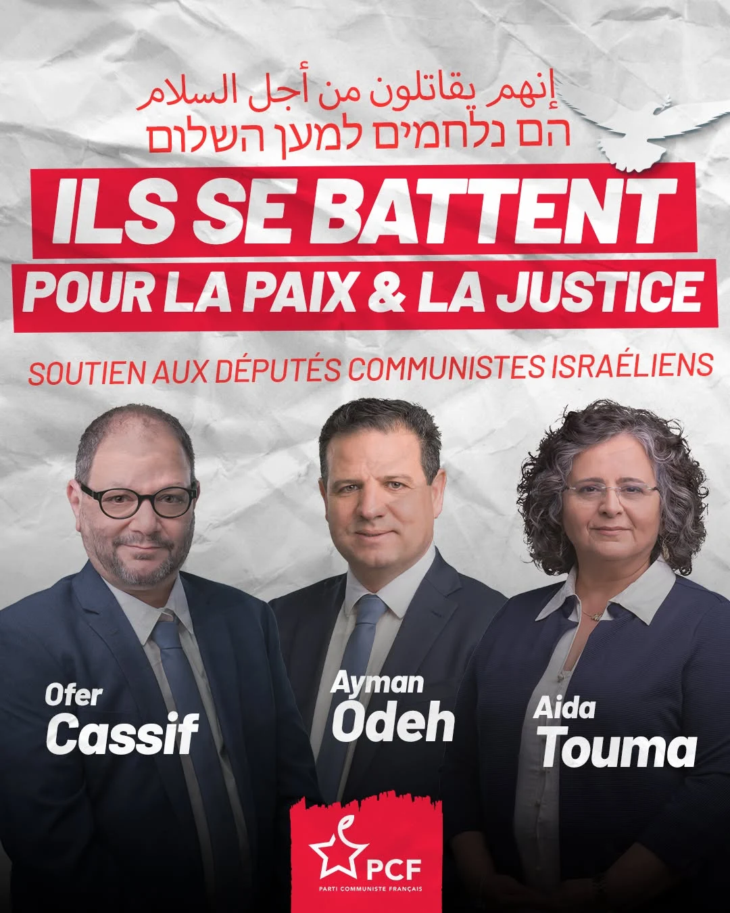

Publication relayée par le PCF 79
Le PCF présente trois députés communistes israéliens engagés pour la paix
Date de mise à jour indiquée par Facebook · 29 juillet 2025
Texte de la publication · PCF national
Ils se battent pour la paix et la justice
Ofer Cassif, Ayman Odeh, Aida Touma : députés communistes israéliens - חד"ש Hadash -, ils dénoncent l’occupation, l’apartheid, la guerre. Face au gouvernement d’extrême droite de Benyamin Netanyahou, ils défendent les droits du peuple palestinien et l’égalité pour tous.
Parce qu’ils osent s’opposer à la colonisation et à la répression, ils subissent pressions, exclusions de la Knesset, campagnes de haine et menaces.
Leur courage force le respect. Leur combat est aussi le nôtre.
Le PCF leur apporte tout son soutien.

Sources
PCF national · publication relayée par le PCF 79 · bibliothèque Facebook · AR-0002-FB-01053
À lire aussi · Journée internationale de la paix. Le texte national dans le relevé